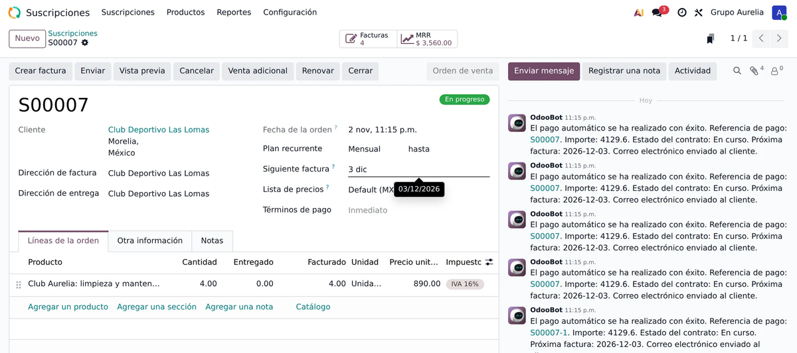
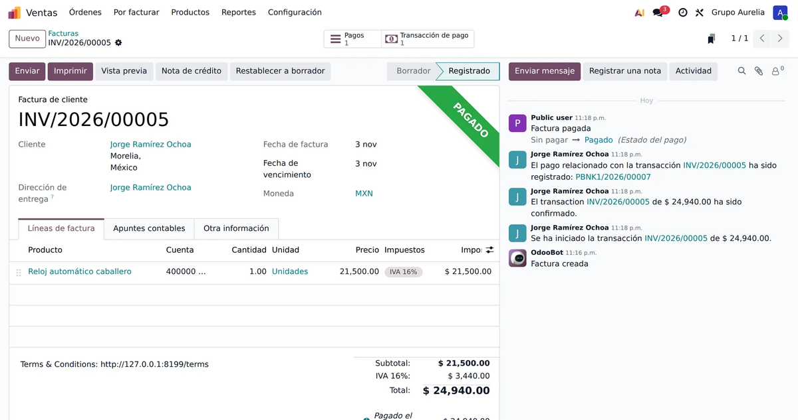

<section class="oe_container" style="font-family:Inter,Arial,sans-serif;color:#24201C">
  <div style="max-width:1080px;margin:0 auto;padding:24px 16px">
    <h2 style="font-size:34px;margin:0 0 8px;text-align:center">XPago: cobra con tarjeta en todo tu Odoo</h2>
    <p style="text-align:center;font-size:18px;color:#776E64;margin:0 0 28px">Caja, kiosco, tienda en línea, ligas de pago y suscripciones con una sola cuenta y una sola comisión: <b style="color:#B8322A">2.99 % + IVA</b>. México.</p>
    <p style="text-align:center;color:#776E64;margin:0 0 32px"><i>Accept Visa, Mastercard and American Express in Mexico across the Point of Sale, kiosk, eCommerce, payment links and subscriptions.</i></p>

    <h3 style="font-size:26px;margin:32px 0 14px">Lo que XPago hace y otras opciones de cobro en Odoo no</h3>
    <table style="width:100%;border-collapse:collapse;font-size:15px">
      <thead><tr style="background:#F1E8DB"><th style="text-align:left;padding:10px">Función</th><th style="padding:10px">Pasarelas en línea</th><th style="padding:10px">Conectores de terminal</th><th style="padding:10px;color:#B8322A">XPago</th></tr></thead>
      <tbody>
        <tr><td style="padding:10px;border-bottom:1px solid #E7DDCF"><b>Cobros de suscripciones</b> con tarjeta guardada, que Odoo cobra y factura cada periodo</td><td style="text-align:center">Algunas</td><td style="text-align:center">No</td><td style="text-align:center;color:#1E8E4E"><b>Sí</b></td></tr>
        <tr><td style="padding:10px;border-bottom:1px solid #E7DDCF"><b>Retener un pago</b> (depósito en garantía) y cobrarlo completo, <b>en parte</b>, o liberarlo</td><td style="text-align:center">Pocas</td><td style="text-align:center">No</td><td style="text-align:center;color:#1E8E4E"><b>Sí</b></td></tr>
        <tr><td style="padding:10px;border-bottom:1px solid #E7DDCF"><b>Elegir a qué cuenta se deposita cada cobro</b> (hasta 10): por terminal, por la cajera al cobrar, o pagos de factura a la cuenta fiscal</td><td style="text-align:center">No</td><td style="text-align:center">No</td><td style="text-align:center;color:#1E8E4E"><b>Sí</b></td></tr>
        <tr><td style="padding:10px;border-bottom:1px solid #E7DDCF"><b>Meses sin intereses por monto</b>, decididos desde Odoo</td><td style="text-align:center">No</td><td style="text-align:center">No</td><td style="text-align:center;color:#1E8E4E"><b>Sí</b></td></tr>
        <tr><td style="padding:10px;border-bottom:1px solid #E7DDCF"><b>Kiosco de autoservicio</b> de Odoo con terminal, para negocios en México</td><td style="text-align:center">No</td><td style="text-align:center">Muy pocos</td><td style="text-align:center;color:#1E8E4E"><b>Sí</b></td></tr>
        <tr><td style="padding:10px;border-bottom:1px solid #E7DDCF"><b>Conciliación en Odoo</b> con comisión, IVA de la comisión y cuenta, y detección de <b>cobros sin venta</b></td><td style="text-align:center">No</td><td style="text-align:center">No</td><td style="text-align:center;color:#1E8E4E"><b>Sí</b></td></tr>
        <tr><td style="padding:10px;border-bottom:1px solid #E7DDCF">La misma cuenta y comisión en caja, kiosco, en línea, ligas y suscripciones</td><td style="text-align:center">Rara vez</td><td style="text-align:center">Rara vez</td><td style="text-align:center;color:#1E8E4E"><b>Sí</b></td></tr>
        <tr><td style="padding:10px">Aviso en Odoo por cada pago que entra</td><td style="text-align:center">No</td><td style="text-align:center">No</td><td style="text-align:center;color:#1E8E4E"><b>Sí</b></td></tr>
      </tbody>
    </table>

    <h3 style="font-size:26px;margin:40px 0 10px">Cobros recurrentes: las suscripciones se cobran solas</h3>
    <p>Tu cliente guarda su tarjeta una sola vez. Las suscripciones nativas de Odoo cobran y facturan cada periodo con XPago, sin que hagas nada.</p>
    

    <h3 style="font-size:26px;margin:40px 0 10px">Depósito en garantía: retén, cobra en parte o libera</h3>
    <p>Retienes un monto en la tarjeta hasta 7 días; después lo cobras completo o en parte, o lo liberas, con los botones nativos de Odoo.</p>
    

    <h3 style="font-size:26px;margin:40px 0 10px">Cada cobro, a la cuenta que elijas</h3>
    <p>Odoo lee tus cuentas de XPago solo. Los pagos de factura van a tu cuenta fiscal y los demás a otra; en la caja, cada terminal tiene su cuenta o la cajera la elige.</p>
    

    <h3 style="font-size:26px;margin:40px 0 10px">Meses sin intereses por monto</h3>
    <p>3, 6, 9 o 12 meses según el monto de la venta. Tu cliente no paga intereses; la comisión de cada plazo la paga tu negocio.</p>
    

    <h3 style="font-size:26px;margin:40px 0 10px">Tienda en línea, ligas y facturas</h3>
    <p>El método nativo «Tarjeta» con Visa, Mastercard y Amex. El pedido se confirma aunque el cliente cierre la página, y las facturas quedan «Pagado» al instante.</p>
    
    

    <h3 style="font-size:26px;margin:40px 0 10px">Precios</h3>
    <ul style="font-size:16px;line-height:1.7">
      <li>App gratis. Comisión de <b>2.99 % + IVA</b> con Visa y Mastercard y <b>3.49 % + IVA</b> con American Express.</li>
      <li>$0 de renta mensual, sin mínimo de ventas ni plazo forzoso. Depósito al día hábil siguiente.</li>
      <li>Para la caja y el kiosco instala también <b>XPago: Card Terminals in the Point of Sale</b> y <b>XPago: Self-Order Kiosk</b>.</li>
    </ul>
    <p style="margin-top:24px">¿Necesitas una cuenta XPago o terminales? Escríbenos: <a href="https://xpago.xubax.com">xpago.xubax.com</a> · WhatsApp 443 688 7346 · hola@xubax.com</p>
  </div>
</section>
